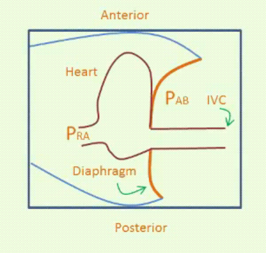

Module I17
Apply
Sixteen modules stand behind this one. I1 gave the three principles, I4 through I9 worked each interface in turn, I10 closed the loop, and I11 through I16 took apart every instrument the bedside offers. Nothing new is taught here. What this page does is put you in front of six data sets whose obvious reading is wrong, and work each one the way the physiology demands rather than the way the monitor invites.
That distinction is the entire point. The failure mode at the bedside is almost never ignorance of the physiology. It is reading a number without first asking what that number is a measurement of, and then treating the number instead of the patient. A central venous pressure of 18 licenses nothing until you know the pressure surrounding the heart. A pulse pressure variation of 18 percent licenses nothing until you know which ventricle is limiting flow, and whether the measurement was valid to begin with. A cardiac output of 8.7 L/min licenses nothing at all about whether tissue is being perfused.
N8 did a version of this at Novice depth, with one case and the algorithm in the foreground. Here the algorithm is in the background and the physiology carries the reasoning. Each case below is worked in the same order: what was measured, what the measurement genuinely licenses, what would distinguish the remaining possibilities, and what the chosen intervention should do to which curve. Where a case turns on a mechanism, the module that owns that mechanism is named and linked rather than re-explained. If you find yourself unable to follow a step, the link is the answer, not a longer paragraph here.
The order in which the questions get asked
Four questions, always in this sequence. The sequence matters more than any individual answer, because getting it out of order is how a competent clinician arrives confidently at the wrong plan.
First, is this number a number? Before a value can be interpreted it has to be a faithful representation of a pressure or a flow. I3 establishes what that requires: correct zeroing, correct leveling to the phlebostatic axis, a system that is neither underdamped nor overdamped, and a read at the right point in the respiratory cycle. I14 and I15 add the waveform-specific traps. A leveling error of a few centimetres will convert one shock phenotype into another without producing any sign that anything is wrong.
Second, what is this number a measurement of? A catheter in the right atrium reports intravascular pressure referenced to atmosphere. That single quantity plays two entirely different roles, and I8 works out why both readings are legitimate: it is the backpressure to venous return, and, once corrected for the pressure surrounding the heart, it is the transmural pressure that distends the ventricle. The catheter cannot tell you which role you are looking at.
Third, what would discriminate? Having named the two or three states still consistent with the data, ask which measurement would separate them and, critically, whether you can actually obtain it. This is where the tools in I11 earn their place, and where a dynamic test usually beats another static pressure.
Fourth, which curve is the intervention supposed to move? Every therapy acts on the venous return curve, on the cardiac function curve, or on both, and N4 drew both while N5 mapped them onto the shock-type grid. Predicting the direction before you act converts treatment into a test. If the prediction fails, the physiologic hypothesis was wrong and you learn something.
Running alongside all four is an arithmetic discipline that costs thirty seconds and repeatedly rescues an interpretation. Two identities do most of the work.
A data set that does not compute is a measurement error until proven otherwise. A mean pulmonary artery pressure that does not sit between the systolic and diastolic values, a right ventricular systolic pressure that differs from the pulmonary artery systolic pressure in a patient with no pulmonic stenosis, a cardiac output by thermodilution that implies an oxygen consumption of half the expected value: each of these is telling you that something in the chain from vessel to screen is broken. I16 covers the flow measurement failures specifically, and they are usually directional rather than random, which means an unchecked number tends to be wrong in a predictable way.
Case 1. Hypotension with a central venous pressure of 18
A 68-year-old man, body mass index 38, day three of influenza pneumonia with moderate acute respiratory distress syndrome. He is passive on volume control at 6 mL/kg predicted body weight (420 mL), respiratory rate 30, PEEP 16, plateau pressure 30, FiO2 0.7 with a PaO2 of 72 mmHg. Blood pressure 84/45 (mean 58), heart rate 110, capillary refill 4 seconds, urine output 15 mL/h, lactate 3.4 mmol/L. Cardiac output by transpulmonary thermodilution 3.9 L/min, giving a cardiac index of 2.05 L/min/m2 at a body surface area of 1.90 m2, a stroke volume of 35 mL and a stroke volume index of 19 mL/m2. Central venous pressure 18 mmHg, read at end expiration at the z point. Systemic vascular resistance computes to 80 × (58 − 18) ÷ 3.9, which is 821 dynes·s·cm−5.
The obvious reading is that this patient is congested. A central venous pressure of 18 sits far above the value at which Magder and Bafaqeeh found volume responsiveness to become unlikely: in their consecutive series of patients given a volume challenge sufficient to raise the central venous pressure by at least 2 mmHg, a value above 10 mmHg marked the point beyond which a rise in cardiac output was improbable, and they proposed exactly that number as the upper limit for empiric fluid challenges. Applied without a second thought, the rule says stop fluid and start diuresis.
The rule is sound and the application is wrong, because the rule was derived in patients whose pleural pressure was near zero. The pressure that distends the right ventricle is the transmural pressure, intracavitary minus the pressure immediately outside the heart, and this patient has two reasons for that outside pressure to be high: 16 cmH2O of PEEP and a chest wall loaded by obesity. An esophageal balloon reads 14 cmH2O at end expiration, which is 10 mmHg. The transmural right atrial pressure is therefore 8 mmHg, not 18.

What would discriminate, if no esophageal balloon is available? Two things. The first is the respiratory swing in the central venous pressure trace itself, which I14 works through: the size of the inspiratory excursion is a rough index of how much airway pressure is reaching the atrium. The second is simply to change the airway pressure and watch. Dropping PEEP by 5 cmH2O and observing the central venous pressure fall by 3 to 4 mmHg while cardiac output rises tells you that a substantial fraction of the measured pressure was never inside the vascular compartment.
Which curve should the intervention move? Not the venous return curve first. The dominant abnormality is that positive pressure has raised the pressure surrounding the great veins, which I8 shows moves the flow-limiting waterfall to a positive right atrial pressure and shortens the usable portion of the venous return curve, while I12 works out the same breath's effect on both ventricles. The first move is therefore to reduce the load: minimise the driving pressure, take PEEP to the lowest value that holds oxygenation, and consider proning. Esophageal pressure guidance is the formal version of this reasoning, and in Talmor's 61-patient pilot trial, setting PEEP to keep transpulmonary pressure positive improved both oxygenation and respiratory system compliance against the standard-of-care table.
Only after that, if perfusion is still inadequate, does a volume challenge become a reasonable test rather than a reflex. Here 250 mL of crystalloid over ten minutes raised the central venous pressure from 18 to 20.5 mmHg, which satisfies Magder's criterion that the challenge was actually delivered, and raised cardiac output from 3.9 to 4.6 L/min, an 18 percent rise. Mean pressure rose to 66 and resistance fell slightly to 791 dynes·s·cm−5. The patient was preload responsive at a central venous pressure of 18. A positive answer is not a mandate to keep going, and the second bolus deserves the same test as the first.
Case 2. A pulse pressure variation of 18 percent that fluid will not fix
A 54-year-old man, day two of septic shock from necrotising pneumonia, deeply sedated and making no respiratory effort, in sinus rhythm at 105. Volume control at 6 mL/kg predicted body weight (410 mL), respiratory rate 26, PEEP 12, plateau 30, so a driving pressure of 18 cmH2O. PaO2/FiO2 120, PaCO2 58 mmHg, pH 7.24. Norepinephrine 0.35 mcg/kg/min. Blood pressure 88/46 (mean 60), lactate 4.1 mmol/L. The monitor displays a pulse pressure variation of 18 percent.
A pulmonary artery catheter is in place. Right atrial pressure 18 mmHg, pulmonary artery 48/24 with a mean of 32, occlusion pressure 9 mmHg, cardiac output 5.6 L/min, cardiac index 2.87 L/min/m2 at a body surface area of 1.95 m2, stroke volume 53 mL, stroke volume index 27 mL/m2, mixed venous saturation 61 percent. Systemic vascular resistance is 80 × (60 − 18) ÷ 5.6, which is 600 dynes·s·cm−5. Pulmonary vascular resistance is (32 − 9) ÷ 5.6, which is 4.1 Wood units.
The obvious reading is that a septic patient with a pulse pressure variation of 18 percent, passive on the ventilator and in sinus rhythm, is fluid responsive and should be given fluid. The index is doing what Michard's original work described, and this is exactly the population in which it was validated.
Three features of the data set say otherwise, and all three point at the same chamber. The first is that the right atrial pressure of 18 exceeds the occlusion pressure of 9. In a passive, supine patient with a correctly levelled transducer, a right-sided filling pressure that sits twice the left-sided one is close to diagnostic of a right ventricle that is the limiting chamber. The second is the pulmonary artery pulsatility index, the pulmonary artery pulse pressure divided by the right atrial pressure, here 24 ÷ 18, which is 1.33. Korabathina and colleagues introduced that ratio in acute inferior myocardial infarction precisely because it captures a right ventricle that can no longer generate pulsatility against its filling pressure. The third is the epidemiology. Mekontso Dessap and colleagues studied 752 patients with moderate to severe acute respiratory distress syndrome under protective ventilation and found acute cor pulmonale in 22 percent, with four independent predictors: pneumonia as the cause, a driving pressure of 18 cmH2O or more, a PaO2/FiO2 ratio under 150, and a PaCO2 of 48 mmHg or more. This patient has all four.
Echocardiography settles it. The right ventricular to left ventricular end-diastolic area ratio is 1.1, which is severe dilatation by that study's definition, with systolic septal flattening. Tricuspid annular plane systolic excursion is 12 mm and the tricuspid annular peak systolic velocity is 0.11 m/s. That last number is the specific discriminator: Mahjoub and colleagues studied 35 ventilated patients who all had a pulse pressure variation above 12 percent and gave every one of them 500 mL of colloid. A third of them, 12 of 35, did not respond, and a tricuspid annular peak systolic velocity below 0.15 m/s separated the false positives from the true positives with 91 percent sensitivity and 83 percent specificity.

The mechanism explains the false positive. I12 sets out the five things a positive pressure breath does, and I13 follows the chain from a cyclic change in volume to a visible change in arterial pressure. When the right ventricle is operating against a load it can barely overcome, each inspiration adds transmural pulmonary vascular resistance to a ventricle with no reserve, and right ventricular output falls sharply during insufflation for reasons that have nothing to do with how much volume is in the reservoir. Two beats later the left ventricle ejects less, the arterial pressure swings, and the monitor reports a number that looks like preload responsiveness. Filling this ventricle further dilates it, worsens septal shift, and reduces left ventricular filling.
The intervention has to move the cardiac function curve by unloading it, not shift the venous return curve to the right. Respiratory rate went from 26 to 32 to correct the respiratory acidosis, tidal volume to 5 mL/kg with PEEP reduced to 10, giving a plateau of 24 and a driving pressure of 14, and the patient was proned. Six hours later: PaCO2 44, pH 7.36, right atrial pressure 13, pulmonary artery 40/18 with a mean of 25, occlusion pressure 9, cardiac output 6.4 L/min, mean arterial pressure 68, norepinephrine down to 0.18 mcg/kg/min. Resistance recomputes to 80 × (68 − 13) ÷ 6.4, which is 688 dynes·s·cm−5, and pulmonary vascular resistance to (25 − 9) ÷ 6.4, which is 2.5 Wood units. Filling pressure fell, flow rose. That combination is the signature of a cardiac function curve that has moved up, and it cannot be produced by giving volume.
One footnote with teeth. The displayed pulse pressure variation is now 8 percent, but at a respiratory rate of 32 and a heart rate of 96 the heart rate to respiratory rate ratio is 3.0, below the 3.6 required for the index to be interpretable at all. The measurement that started this case has been abolished by the treatment that fixed it.
Case 3. A pulse pressure variation that is not a measurement at all
A 58-year-old woman, twelve hours after emergency laparotomy for perforated diverticulitis, closed under tension. She is on pressure support with variable spontaneous effort, tidal volumes between 320 and 480 mL, and has gone into atrial fibrillation at 128. Blood pressure 96/45 (mean 62), central venous pressure 11 mmHg, bladder pressure 22 mmHg, urine output 8 mL/h, lactate 2.9 mmol/L. The monitor displays a pulse pressure variation of 21 percent.
Pulse contour cardiac output is unavailable in any meaningful sense, because the algorithms assume a reproducible beat, so flow is measured by echocardiography instead. Left ventricular outflow tract diameter 2.0 cm gives a cross-sectional area of 3.14 cm2. The velocity-time integral, averaged over ten consecutive beats because of the arrhythmia, is 11.0 cm, giving a stroke volume of 34.5 mL and a cardiac output of 4.4 L/min at 128 beats per minute. Body surface area 1.85 m2, so a cardiac index of 2.4 L/min/m2. Resistance is 80 × (62 − 11) ÷ 4.4, which is 927 dynes·s·cm−5.
The pulse pressure variation of 21 percent is not a borderline result and it is not a grey zone result, which I13 locates between roughly 9 and 13 percent. It is not a result. Three of the six standard validity conditions are violated at once: the rhythm is irregular, so beat-to-beat stroke volume varies for reasons unconnected to the breath, the patient is making spontaneous efforts of varying size, so the respiratory stimulus itself is not constant, and the tidal volumes are below the threshold at which De Backer and colleagues found the index to classify correctly. In their sixty-patient study, a 12 percent cut-off classified 88 percent of patients correctly when tidal volume was at least 8 mL/kg and only 51 percent when it was below that, which is indistinguishable from a coin.
How often is this the situation? Mahjoub and colleagues ran a single-day point-prevalence study across 26 French intensive care units and applied all six validity criteria to every patient present. Of 311 patients, six satisfied all of them. Among the 170 with an arterial line already in place, five did. The monitor will display the number for essentially every patient in the unit, and the number is interpretable in about two percent of them.

What would discriminate? A test that does not depend on the ventilator and does not depend on a regular rhythm. The passive leg raise satisfies both, provided the response is measured as a change in flow rather than a change in pulse pressure and provided enough beats are averaged. Monnet, Marik and Teboul pooled 21 studies and 991 patients: when the response is read as a change in cardiac output, sensitivity is 85 percent and specificity 91 percent with an area under the curve of 0.95, and the best threshold is a rise of about 10 percent. When the response is read as a change in pulse pressure instead, sensitivity collapses to 56 percent. Here the leg raise moved the velocity-time integral from 11.0 to 11.6 cm, a rise of 5 percent. Not responsive.
Confirmed with a 250 mL challenge, which raised the central venous pressure from 11 to 14 mmHg, so the venous return curve genuinely shifted right, while the velocity-time integral went from 11.0 to 11.2 cm. That is the shape of the answer that matters: the challenge was delivered and the flow did not move.
The lesion is the abdomen. A bladder pressure of 22 mmHg is grade III intra-abdominal hypertension by the World Society consensus definitions, well above the 12 mmHg threshold and above the 20 mmHg at which new organ dysfunction defines abdominal compartment syndrome. Nasogastric decompression, deeper sedation with a period of neuromuscular blockade, and drainage of 1.2 L of ascites brought it to 12 mmHg. Mean arterial pressure rose to 72, central venous pressure fell to 8, velocity-time integral rose to 14.8 cm at a rate of 118, giving a stroke volume of 46 mL and a cardiac output of 5.5 L/min.
Now recompute the resistance: 80 × (72 − 8) ÷ 5.5, which is 931 dynes·s·cm−5. It was 927 before. Systemic vascular resistance did not change at all. Blood pressure rose by 10 mmHg and flow rose by 25 percent, and none of it came from the arterial side. The entire lesion was on the return side of the circulation, which is exactly what the arithmetic says and exactly what neither the blood pressure nor the pulse pressure variation could have told you.
Case 4. A cardiac output of 8.7 L/min in a patient who is not being perfused
A 61-year-old man with alcoholic cirrhosis, admitted three days ago with a bleeding varix, banded, transfused, now febrile with a rising white count. He is awake but confused, on norepinephrine 0.28 mcg/kg/min. Blood pressure 102/45 (mean 64), heart rate 112, capillary refill 5 seconds, mottling over both knees, urine output 10 mL/h, lactate 6.2 mmol/L. Every marker in the bedside set that N3 assembles is abnormal. Hemoglobin 8.2 g/dL, arterial saturation 96 percent, central venous saturation 79 percent, and the venous to arterial carbon dioxide difference is 9 mmHg. Central venous pressure 10 mmHg. Cardiac output by echocardiography 8.7 L/min at a body surface area of 1.90 m2, so a cardiac index of 4.6 L/min/m2 and a stroke volume of 78 mL. Resistance is 80 × (64 − 10) ÷ 8.7, which is 497 dynes·s·cm−5.
The obvious reading is that flow is not the problem. Cardiac index 4.6, central venous saturation 79 percent, a resistance of 497 that names the lesion as vasoplegia. Add pressor, chase the mean arterial pressure, do not touch the heart. The reading is half right and dangerously incomplete.
Work the oxygen arithmetic, which N2 sets up and I16 operationalises. Arterial oxygen content is 1.34 × 8.2 × 0.96, which is 10.55 mL/dL. Venous content, using the central venous saturation as an imperfect stand-in for mixed venous, is 1.34 × 8.2 × 0.79, which is 8.68 mL/dL. Oxygen delivery is therefore 8.7 × 10.55 × 10, about 918 mL/min, or 483 mL/min/m2, which is at the bottom of normal despite a cardiac index in the top quartile. The whole of the cardiac output is buying only a normal delivery because the arterial content is a third below normal. Consumption is 8.7 × 1.87 × 10, about 163 mL/min, or 86 mL/min/m2, which is low. The extraction ratio is 163 divided by 918, which is 18 percent, against a normal of roughly 25 to 30.
So the picture is not a patient with plenty of flow. It is a patient whose delivery is marginal because of anemia and whose tissues are extracting badly from what does arrive. The venous to arterial carbon dioxide difference of 9 mmHg sharpens this. That gap widens when the flow washing carbon dioxide out of the tissues is inadequate, and it is normally inversely related to cardiac output, so a wide gap at a cardiac index of 4.6 is a contradiction that has to be resolved. It resolves in the microcirculation: total flow is high and effectively perfused capillary density is low. I6 gives this its proper name, the loss of hemodynamic coherence, the state in which a corrected systemic variable no longer implies a corrected tissue bed. Ospina-Tascón and colleagues turned the same pair of measurements into a prognostic index in 135 patients with septic shock, dividing the carbon dioxide gap by the arterial to venous oxygen content difference. Here that ratio is 9 ÷ 1.87, which is 4.8, far above the value of 1.0 above which, combined with a lactate over 2, they found the worst organ dysfunction and the lowest 28-day survival.
What actually helps here is unglamorous: source control for the sepsis, transfusion to correct the delivery term that the arithmetic identified, and a perfusion target read at the tissue rather than in the blood gas analyser. The ANDROMEDA-SHOCK trial randomised 424 patients with septic shock to resuscitation targeting capillary refill time or serum lactate. Twenty-eight-day mortality was 34.9 percent against 43.4 percent, which did not reach significance at a hazard ratio of 0.75, but organ dysfunction at 72 hours was lower with the perfusion target. In the secondary analysis, Kattan and colleagues showed that fluid responsiveness could be determined in more than 80 percent of these patients and that boluses could be withheld from the non-responders without any cost in outcome. In this patient, a passive leg raise moved the velocity-time integral by 4 percent. He is not fluid responsive, and every further litre goes into a splanchnic reservoir that I7 describes and a leaking capillary bed that I6 describes.
Case 5. A right ventricle failing against its load
A 65-year-old woman with idiopathic pulmonary arterial hypertension, admitted five days ago for initiation of intravenous treprostinil and diuresis. She is net negative 7 L and has done well. This morning the treprostinil was increased to 18 ng/kg/min, and a few hours later she became hypotensive. The dose was reduced to 14 ng/kg/min without improvement. Weight 65 kg, body surface area 1.70 m2. Blood pressure 85/54 (mean 64), heart rate 103, saturation 91 percent, lungs clear, trace peripheral edema, capillary refill 3 seconds, lactate 2.5 mmol/L, creatinine 1.6 mg/dL.
Her pulmonary artery catheter reads: right atrial pressure 16 mmHg, pulmonary artery 58/26 with a mean of 37, occlusion pressure 9 mmHg, cardiac output 2.9 L/min, cardiac index 1.71 L/min/m2, stroke volume 28 mL, stroke volume index 16.6 mL/m2, mixed venous saturation 48 percent, hemoglobin 12.1 g/dL. Systemic vascular resistance is 80 × (64 − 16) ÷ 2.9, which is 1324 dynes·s·cm−5. Pulmonary vascular resistance is (37 − 9) ÷ 2.9, which is 9.7 Wood units. Cardiac power output is 64 × 2.9 ÷ 451, which is 0.41 W.
Every static variable in that list is uninterpretable in isolation, and this is the specific difficulty of a patient with chronic pulmonary hypertension. Her baseline cardiac index is low. Her baseline right atrial pressure is high. Her baseline pulmonary pressures are high. Hypovolemia from overdiuresis, distributive shock from the prostacyclin, and right ventricular failure would all present with a low mean arterial pressure, a low cardiac index and a high central venous pressure. There is no static number that separates them.
Which forces a dynamic test, and the patient is spontaneously breathing, so the ventilator-derived indices are unavailable. A passive leg raise raised the right atrial pressure from 16 to 19 mmHg and moved the velocity-time integral from 11.2 to 11.5 cm, with cardiac output going from 2.9 to 3.0 L/min. The rise in right atrial pressure is the informative half. It says the manoeuvre worked, the venous return curve did shift to the right, and mean systemic filling pressure did increase. The flat flow response says the cardiac function curve she is sitting on cannot use it.
![Plot of cardiac output against right atrial pressure. A blue solid venous return line falls from upper left to reach zero flow at a right atrial pressure of 22, and a blue dashed line parallel to it reaches zero at 25. A red solid curve rises steeply then flattens near 3 L per minute, and a red dashed curve above it flattens near 5 L per minute. Point a sits at right atrial pressure 16 and output 2.9 where the solid lines cross. Point b sits at 19 and 3.0 where the dashed venous return line crosses the same flat red curve. Point c sits at 13 and 4.3 where the solid venous return line crosses the raised red curve.](img/i17-rv-flat-curve.svg)
The remaining question is why the ventricle is failing, and the answer changes the drug order. This is not primarily a contractility problem. The load has not changed much, but the ventricle's ability to work against it has: right ventricular stroke work index, 0.0136 × (37 − 16) × 16.6, is 4.7 g·m/m2, and the pulmonary artery pulsatility index, 32 ÷ 16, is 2.0. I9 traces the spiral by which a pressure-loaded right ventricle loses coronary perfusion. The right ventricular free wall normally perfuses through both systole and diastole because its cavity pressure is low. Once right ventricular systolic pressure approaches aortic systolic pressure, the systolic component of that gradient disappears and the ventricle becomes dependent on diastolic perfusion in the same way the left ventricle is, at exactly the moment its oxygen demand is highest.
That is why the sequence is to perfuse before you inotrope. Dobutamine given first to a poorly perfused, pressure-loaded right ventricle raises its oxygen demand and its rate, shortens the systolic ejection period, and can lower cardiac output. Norepinephrine at 0.08 mcg/kg/min raised the mean arterial pressure from 64 to 78 with a right atrial pressure of 15 and cardiac output of 3.4 L/min, a resistance of 1482 dynes·s·cm−5. The resistance went up, which is expected and is not the mechanism of the improvement: the ventricle was better perfused and the modest beta-1 effect lifted the curve. Dobutamine at 3 mcg/kg/min was then added, giving a mean pressure of 74, right atrial pressure 13, pulmonary artery 55/25 with a mean of 35, occlusion pressure 9, cardiac output 4.3 L/min, cardiac index 2.5, stroke volume index 26 mL/m2. Resistance 1135 dynes·s·cm−5, pulmonary vascular resistance 6.0 Wood units, right ventricular stroke work index 7.7 g·m/m2, pulmonary artery pulsatility index 2.3, mixed venous saturation 61 percent, cardiac power output 0.71 W.
The treprostinil, incidentally, was not the useful lever in either direction. Its half-life is four to six hours, so the reduction made three hours earlier had barely taken effect, and reducing a pulmonary vasodilator in a patient whose right ventricle is failing against its load raises that load further. The prostacyclin was restored to 18 ng/kg/min once the perfusion pressure was secured.
Case 6. A wedge of 26 that is not a left ventricular filling pressure
A 55-year-old man with a history of mitral valve endocarditis five years ago, intubated for seven days for what was called ARDS, on norepinephrine, not weaning, 3 L positive over the admission. He is passive on volume control at 450 mL with PEEP 10. Blood pressure 95/75 (mean 82), heart rate 120, capillary refill 5 seconds, urine output 15 mL/h, lactate 4.4 mmol/L, hemoglobin 9.4 g/dL, arterial saturation 94 percent. A faint apical systolic murmur.
A pulmonary artery catheter is placed. Right atrial pressure 14 mmHg. Pulmonary artery 52/30 with a mean of 37. The occlusion tracing has a mean of 26 mmHg, an a wave of 18 and a v wave peaking at 44. Cardiac output by thermodilution, averaged over four injections, 3.4 L/min, giving a cardiac index of 1.79 L/min/m2 at a body surface area of 1.90 m2, a stroke volume of 28 mL and a stroke volume index of 15 mL/m2. Mixed venous saturation 42 percent. Systemic vascular resistance is 80 × (82 − 14) ÷ 3.4, which is 1600 dynes·s·cm−5. Cardiac power output is 82 × 3.4 ÷ 451, which is 0.62 W.
There are two obvious readings and both are wrong. The first is that a mean arterial pressure of 82 means this patient is not in shock. I2 takes that argument apart: a pulse pressure of 20 mmHg against a systolic of 95, a proportional pulse pressure of 21 percent, and a stroke volume index of 15 mL/m2 describe a profoundly low-output state whose diastolic pressure is being held up entirely by exogenous alpha agonism. The mean pressure is a report on the vasopressor, not on the circulation. The second wrong reading is that an occlusion pressure of 26 means the left ventricle is overfilled and should be diuresed.

The mean of 26 is a faithful mean left atrial pressure and it is the correct number to use in the pulmonary vascular resistance calculation, which comes to (37 − 26) ÷ 3.4, or 3.2 Wood units, with a diastolic pulmonary gradient of 30 − 26, which is 4 mmHg. That combination says the pulmonary hypertension here is post-capillary and passive, not a pulmonary vascular disease. But the mean of 26 is emphatically not the left ventricular end-diastolic pressure, because the v wave that inflates it occurs during ventricular systole, when the mitral valve is shut and the left atrium is receiving both pulmonary venous return and a regurgitant jet. The pressure that reflects left ventricular preload is the a wave, or more precisely the z point immediately after it, which is 18 mmHg. Corrected for a pleural pressure of about 4 mmHg at end expiration in a patient with stiff lungs on PEEP 10, the transmural filling pressure is nearer 14. This ventricle is not overfilled.
One caution that keeps this from becoming a rule. Fuchs and colleagues showed in 1982 that the v wave is a poor diagnostic test for mitral regurgitation in both directions. Its height depends on left atrial compliance and on the volume entering the atrium during systole from any source, so a large v wave appears in ventricular septal defect and in any cause of a stiff, volume-loaded left atrium, and a patient with severe chronic mitral regurgitation and a dilated compliant atrium can have almost no v wave at all. The v wave here raises the question. Colour Doppler and systolic flow reversal in the pulmonary veins answer it.
Which curve does the intervention move? The regurgitant fraction is set by the ratio of the impedance the ventricle sees through the mitral valve to the impedance it sees through the aortic valve. Norepinephrine, by driving the systemic vascular resistance to 1600, had been steadily increasing the share of each stroke going backwards. Reducing it and adding an inodilator moves the effective cardiac function curve up not by making the myocardium stronger but by redirecting the stroke volume forwards.
Norepinephrine was weaned, dobutamine started at 5 mcg/kg/min, and nitroprusside titrated. Blood pressure 92/58 (mean 69), heart rate 108, right atrial pressure 11, pulmonary artery 44/24 with a mean of 31, occlusion mean 19 with the v wave down to 28, cardiac output 4.9 L/min, cardiac index 2.6, stroke volume 45 mL, stroke volume index 24 mL/m2, mixed venous saturation 58 percent. Resistance is 80 × (69 − 11) ÷ 4.9, which is 947 dynes·s·cm−5. Cardiac power output is 69 × 4.9 ÷ 451, which is 0.75 W.
The mean arterial pressure fell by 13 mmHg and every measure of perfusion improved. Cardiac power output, the one variable that combines the pressure and the flow, rose by more than a fifth. A clinician managing to a mean arterial pressure target would have read the first move as a deterioration and reversed it, which is one of the reasons I5 insists that the target belongs to the patient rather than to the protocol.
The six cases side by side
Set out together, the presenting numbers make a point that no individual case can. The six patients occupy six different regions of the same six-variable space, and in four of the six the variable that everyone looks at first is the one that misleads.
| MAP | Cardiac output | RAP | PAPm | PAOP | SVR | |
|---|---|---|---|---|---|---|
| 1. ARDS, obese, PEEP 16 | 58 | 3.9 | 18 | not measured | not measured | 821 |
| 2. Sepsis with acute cor pulmonale | 60 | 5.6 | 18 | 32 | 9 | 600 |
| 3. Laparotomy, abdominal hypertension | 62 | 4.4 | 11 | not measured | not measured | 927 |
| 4. Cirrhosis with sepsis | 64 | 8.7 | 10 | not measured | not measured | 497 |
| 5. Pulmonary hypertension, RV failure | 64 | 2.9 | 16 | 37 | 9 | 1324 |
| 6. Severe mitral regurgitation | 82 | 3.4 | 14 | 37 | 26 | 1600 |
Three of the six phenotypes were settled without a pulmonary artery catheter, which is worth noticing before reaching for one. Cases 2, 5 and 6 needed the pulmonary pressures because the question in each was about the right ventricle or the left atrium specifically, and no other tool answers those questions with numbers you can compute with.
| Case | The obvious reading | What the data actually licensed | Which curve moved |
|---|---|---|---|
| 1 | RAP 18, congested, diurese | Transmural RAP 8, the ventricle is underfilled behind a raised pleural pressure | Lower the pressure surrounding the vessels, which restores the usable part of the venous return curve |
| 2 | PPV 18 percent, give fluid | RAP above PAOP, PAPi 1.33, tricuspid annular velocity 0.11 m/s: a false positive from an afterload-limited RV | Unload the right ventricle, raising the cardiac function curve |
| 3 | PPV 21 percent, give fluid | Three validity conditions violated, so no measurement at all. Not responsive on leg raise or challenge | Decompress the abdomen. Resistance unchanged at 930, flow up 25 percent |
| 4 | CI 4.6 and ScvO2 79 percent, flow is adequate | Delivery only 480 mL/min/m2, extraction ratio 18 percent, CO2 gap 9: incoherent microcirculation | Neither. Correct the content term and the source, and stop titrating flow |
| 5 | Low CI with a high RAP after diuresis, give fluid back | Leg raise raised RAP by 3 with no flow response: the flat part of a depressed RV curve | Perfuse, then inotrope. The function curve rises and RAP falls |
| 6 | MAP 82 is adequate, PAOP 26 is congested | Stroke volume index 15 behind vasopressor-supported diastole. The v wave inflates the mean, the a wave is 18 | Reduce systemic impedance, redirecting stroke volume forwards |
Two patterns recur. The first is that a pressure was being read without its reference frame, in cases 1, 5 and 6. The second is that a monitor was displaying a derived index whose preconditions had not been checked, in cases 2 and 3. Neither error is a failure of physiologic knowledge. Both are failures to ask the first question before the third one.
The other recurrence is more encouraging. In four of the six cases the correct intervention lowered a pressure: pleural pressure in case 1, pulmonary artery pressure in case 2, abdominal pressure in case 3, systemic arterial pressure in case 6. Funk and colleagues make the general version of this argument across their two-part review of venous return in critical illness, which is that the circulation is a closed loop in which the pressure at any point is a consequence of the interaction between a pump and a reservoir rather than a quantity you set. Raising a pressure to treat a low pressure is the intervention that most often looks right and most often is not.
There is no seventh case here, because the seventh case is on your unit. The habit the six are meant to install is small and portable: establish that the number is a number, name what it is a measurement of, decide what would discriminate between the states still standing, and predict what your intervention will do to which curve before you give it. Do that and the treatment becomes a test, which means a wrong hypothesis announces itself within minutes instead of hours. The Expert pathway takes several of these situations further, into the full integration of the heart and the lung, into right ventricular to pulmonary arterial coupling at the level of impedance rather than resistance, and into the advanced shock models that unify what the six cases here approach one at a time.
References
- Magder S, Bafaqeeh F. The clinical role of central venous pressure measurements. J Intensive Care Med. 2007;22(1):44-51. doi:10.1177/0885066606295303.
- Magder S. Fluid status and fluid responsiveness. Curr Opin Crit Care. 2010;16(4):289-296. doi:10.1097/MCC.0b013e32833b6bab.
- Talmor D, Sarge T, Malhotra A, O'Donnell CR, Ritz R, Lisbon A, Novack V, Loring SH. Mechanical ventilation guided by esophageal pressure in acute lung injury. N Engl J Med. 2008;359(20):2095-2104. doi:10.1056/NEJMoa0708638. Free full text.
- Pinsky MR. Cardiopulmonary interactions: physiologic basis and clinical applications. Ann Am Thorac Soc. 2018;15(Suppl 1):S45-S48. doi:10.1513/AnnalsATS.201704-339FR. Free full text.
- Michard F, Boussat S, Chemla D, Anguel N, Mercat A, Lecarpentier Y, Richard C, Pinsky MR, Teboul JL. Relation between respiratory changes in arterial pulse pressure and fluid responsiveness in septic patients with acute circulatory failure. Am J Respir Crit Care Med. 2000;162(1):134-138. doi:10.1164/ajrccm.162.1.9903035.
- De Backer D, Heenen S, Piagnerelli M, Koch M, Vincent JL. Pulse pressure variations to predict fluid responsiveness: influence of tidal volume. Intensive Care Med. 2005;31(4):517-523. doi:10.1007/s00134-005-2586-4.
- Mahjoub Y, Pila C, Friggeri A, Zogheib E, Lobjoie E, Tinturier F, Galy C, Slama M, Dupont H. Assessing fluid responsiveness in critically ill patients: false-positive pulse pressure variation is detected by Doppler echocardiographic evaluation of the right ventricle. Crit Care Med. 2009;37(9):2570-2575. doi:10.1097/CCM.0b013e3181a380a3.
- Mahjoub Y, Lejeune V, Muller L, Perbet S, Zieleskiewicz L, Bart F, et al. Evaluation of pulse pressure variation validity criteria in critically ill patients: a prospective observational multicentre point-prevalence study. Br J Anaesth. 2014;112(4):681-685. doi:10.1093/bja/aet442.
- Mekontso Dessap A, Boissier F, Charron C, Bégot E, Repessé X, Legras A, Brun-Buisson C, Vignon P, Vieillard-Baron A. Acute cor pulmonale during protective ventilation for acute respiratory distress syndrome: prevalence, predictors, and clinical impact. Intensive Care Med. 2016;42(5):862-870. doi:10.1007/s00134-015-4141-2.
- Monnet X, Marik P, Teboul JL. Passive leg raising for predicting fluid responsiveness: a systematic review and meta-analysis. Intensive Care Med. 2016;42(12):1935-1947. doi:10.1007/s00134-015-4134-1.
- Kirkpatrick AW, Roberts DJ, De Waele J, Jaeschke R, Malbrain ML, De Keulenaer B, et al. Intra-abdominal hypertension and the abdominal compartment syndrome: updated consensus definitions and clinical practice guidelines from the World Society of the Abdominal Compartment Syndrome. Intensive Care Med. 2013;39(7):1190-1206. doi:10.1007/s00134-013-2906-z. Free full text.
- Ospina-Tascón GA, Umaña M, Bermúdez W, Bautista-Rincón DF, Hernandez G, Bruhn A, Granados M, Salazar B, Arango-Dávila C, De Backer D. Combination of arterial lactate levels and venous-arterial CO2 to arterial-venous O2 content difference ratio as markers of resuscitation in patients with septic shock. Intensive Care Med. 2015;41(5):796-805. doi:10.1007/s00134-015-3720-6. Free full text.
- Ince C. Hemodynamic coherence and the rationale for monitoring the microcirculation. Crit Care. 2015;19(Suppl 3):S8. doi:10.1186/cc14726. Free full text.
- Hayes MA, Timmins AC, Yau EH, Palazzo M, Hinds CJ, Watson D. Elevation of systemic oxygen delivery in the treatment of critically ill patients. N Engl J Med. 1994;330(24):1717-1722. doi:10.1056/NEJM199406163302404.
- Hernández G, Ospina-Tascón GA, Damiani LP, Estenssoro E, Dubin A, Hurtado J, et al. Effect of a resuscitation strategy targeting peripheral perfusion status vs serum lactate levels on 28-day mortality among patients with septic shock: the ANDROMEDA-SHOCK randomized clinical trial. JAMA. 2019;321(7):654-664. doi:10.1001/jama.2019.0071. Free full text.
- Kattan E, Ospina-Tascón GA, Teboul JL, Castro R, Cecconi M, Ferri G, Bakker J, Hernández G. Systematic assessment of fluid responsiveness during early septic shock resuscitation: secondary analysis of the ANDROMEDA-SHOCK trial. Crit Care. 2020;24(1):23. doi:10.1186/s13054-020-2732-y. Free full text.
- Kattan E, Hernández G, Ospina-Tascón G, Valenzuela ED, Bakker J, Castro R. A lactate-targeted resuscitation strategy may be associated with higher mortality in patients with septic shock and normal capillary refill time: a post hoc analysis of the ANDROMEDA-SHOCK study. Ann Intensive Care. 2020;10(1):114. doi:10.1186/s13613-020-00732-1. Free full text.
- Korabathina R, Heffernan KS, Paruchuri V, Patel AR, Mudd JO, Prutkin JM, Orr NM, Weintraub A, Kimmelstiel CD, Kapur NK. The pulmonary artery pulsatility index identifies severe right ventricular dysfunction in acute inferior myocardial infarction. Catheter Cardiovasc Interv. 2012;80(4):593-600. doi:10.1002/ccd.23309.
- Fincke R, Hochman JS, Lowe AM, Menon V, Slater JN, Webb JG, LeJemtel TH, Cotter G. Cardiac power is the strongest hemodynamic correlate of mortality in cardiogenic shock: a report from the SHOCK trial registry. J Am Coll Cardiol. 2004;44(2):340-348. doi:10.1016/j.jacc.2004.03.060.
- Fuchs RM, Heuser RR, Yin FC, Brinker JA. Limitations of pulmonary wedge V waves in diagnosing mitral regurgitation. Am J Cardiol. 1982;49(4):849-854. doi:10.1016/0002-9149(82)91968-3.
- Funk DJ, Jacobsohn E, Kumar A. The role of venous return in critical illness and shock, part I: physiology. Crit Care Med. 2013;41(1):255-262. doi:10.1097/CCM.0b013e3182772ab6.
- Funk DJ, Jacobsohn E, Kumar A. Role of the venous return in critical illness and shock, part II: shock and mechanical ventilation. Crit Care Med. 2013;41(2):573-579. doi:10.1097/CCM.0b013e31827bfc25.